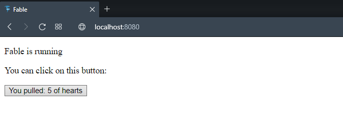
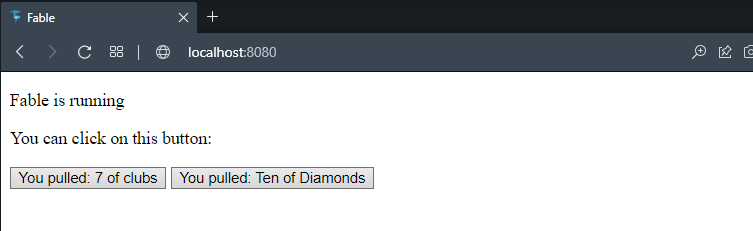
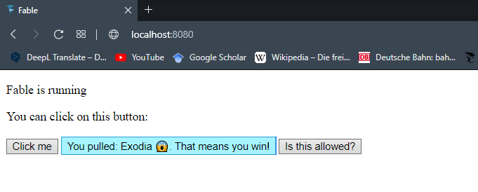

Fable is a compiler that lets you use F# to build applications that run in the JavaScript ecosystem.
What does this exactly mean?
You can write F# code and let fable translate it to javascript. (The following window shows Fable REPL and in-browser tool live translating F# code to javascript.)
Target runtime is JavaScript! All code execution will be done on a JavaScript level. Fable output can only be executed in the Browser.
The Fable application with the final code can be found in the root directory of the CSBlog repository.
How2Fable.zip (if you download the whole repo, you will need to move the zip out of it, or it will lead to depedency issues and it will not run)How2Fable folder.npm installnpm startlocalhost:8080All further examples are based on the standard Fable template, which you can install as described here.
Short summary:
dotnet new --install Fable.Template ➞ install newest Fable template.dotnet new fable ➞ create new Fable template in open folder.npm install ➞ install all JS dependencies.npm start ➞ install all .NET dependencies and start local webpack server with fable output.You can find the example project in the CSBlogpost repository (How2Fable-Folder).
First to the important elements in the fable folder:
package.json
scripts defines for example npm start as dotnet fable watch src --run webpack-dev-serverdevDependencies reference of all JS dependencies.webpack.config.js all settings for webapplication. For exmaple, determines localhost port.public\index.html the base html page displayed in browser.public\bundle.js all Fable output bundled together.src, this folder contains the F# project, which will be compiled to JS.
.fsproj file for dependencies..fs files.In the next step I added the code from the Fable REPL above to the Fable template project and adjusted the button for it.
This will result in a button (which can be found in the index.html), which displays on-click one drawn card.
|
/// App.fs
///
module Cards =
/// The following represents the suit of a playing card.
type Suit =
| Hearts
| Clubs
| Diamonds
| Spades
/// A Discriminated Union can also be used to represent the rank of a playing card.
type Rank =
/// Represents the rank of cards 2 .. 10
| Value of int
| Ace
| King
| Queen
| Jack
/// Discriminated Unions can also implement object-oriented members.
static member GetAllRanks() =
[ yield Ace
for i in 2 .. 10 do yield Value i
yield Jack
yield Queen
yield King ]
/// This is a record type that combines a Suit and a Rank.
/// It's common to use both Records and Discriminated Unions when representing data.
type Card = { Suit: Suit; Rank: Rank }
/// This computes a list representing all the cards in the deck.
let fullDeck =
[| for suit in [ Hearts; Diamonds; Clubs; Spades] do
for rank in Rank.GetAllRanks() do
yield { Suit=suit; Rank=rank } |]
/// This example converts a 'Card' object to a string.
let showPlayingCard (c: Card) =
let rankString =
match c.Rank with
| Ace -> "Ace"
| King -> "King"
| Queen -> "Queen"
| Jack -> "Jack"
| Value n -> string n
let suitString =
match c.Suit with
| Clubs -> "clubs"
| Diamonds -> "diamonds"
| Spades -> "spades"
| Hearts -> "hearts"
rankString + " of " + suitString
/// This example prints all the cards in a playing deck.
let printAllCards() =
for card in fullDeck do
printfn "%s" (showPlayingCard card)
let drawOneAndPrintCard() =
let rand = new System.Random()
fullDeck.[rand.Next(fullDeck.Length)]
|> (showPlayingCard)
// Mutable variable to count the number of times we clicked the button
let mutable drawnCard = ""
// Get a reference to our button (in file: index.html) and cast the Element to an HTMLButtonElement.
/// The last step is necessary as the compiler does otherwise not understand which type the html element has.
let myButton = document.querySelector(".my-button") :?> Browser.Types.HTMLButtonElement
// Register our listener
myButton.onclick <- fun _ ->
drawnCard <- Cards.drawOneAndPrintCard()
myButton.innerText <- sprintf "You pulled: %s " drawnCard
The example will at this point, and after clicking the button, look like this:

How can Fable translate our F# code to JS? Because most functions of the core F# libraries were redone in JS and Fable downloads these functions to src\.fable.
These are then used to compile the F# source files into their JS counterparts. After npm start, Fable will create .fs.js (default) files from all F# source files.
For example App.fs ➞ App.fs.js. If we look into these, we can see that the modules are imported from the .fable folder and used to translate our code.
This translated code will be used for the webpack app.
To further showcase this, I created a new source file SearchMe.fs with just one binding and call this binding from the App.fs file.
This is necessary, as App.fs is defined as our app entry in the webpack.config.js and Fable will only compile referenced F# code to JS, to minimize bloat.
/// SearchMe.fs
///
module SearchMe
let iAmAVeryLongAndEasilySearchableName = "Hello World"
/// App.fs
///
printfn $"{SearchMe.iAmAVeryLongAndEasilySearchableName}"
npm run build will bundle all Fable-compiled JS files into public\bundle.js. This file will contain imports from ./src/.fable/,
but also one for each F# source file. If we search it for iAmAVeryLongAndEasilySearchableName or drawOneAndPrintCard we will find the respective JS code.
Because Fable can only compile code patterns and the functions from the modules in src\.fable it is not possible to compile any F# library with Fable out of the box.
If we add <PackageReference Include="FSharp.Stats" Version="0.4.3" /> to App.fsproj it will return an error.
/// App.fs
///
open FSharp.Stats
// Example from https://fslab.org/FSharp.Stats/BasicStats.html
let mean1 =
[10; 2; 19; 24; 6; 23; 47; 24; 54; 77;]
|> Seq.meanBy float
printfn $"{mean1}"
Error in powershell/cmd.
|
Fable has no idea about the Seq.meanBy function and cannot translate it to JS. For a list of Fable compatible libraries you can look
here for F# Core libraries and here for community ressources.
It is also possible to make F# libraries Fable compatible as described here. This was for example done for the ISADotNet library with a conditional trigger, to publish two nuget package versions. One with and one without Fable compatibility.
|
This code is a modified version of the build target from the libary development knowledgebase article.
/// build.fsx
///
let pack = BuildTask.create "Pack" [clean; build; runTests; copyBinaries] {
if promptYesNo (sprintf "creating stable package with version %s OK?" stableVersionTag )
then
!! "src/**/*.*proj"
|> Seq.iter (Fake.DotNet.DotNet.pack (fun p ->
let msBuildParams =
{p.MSBuildParams with
Properties = ([
"Version",stableVersionTag
"PackageReleaseNotes", (release.Notes |> List.map replaceCommitLink |> String.concat "
] @ p.MSBuildParams.Properties)
}
{
p with
MSBuildParams = msBuildParams
OutputPath = Some pkgDir
}
))
/// This is used to create ISADotNet.Fable with the Fable subfolder as explained here:
/// https://fable.io/docs/your-fable-project/author-a-fable-library.html
"src/ISADotNet/ISADotNet.fsproj"
|> Fake.DotNet.DotNet.pack (fun p ->
let msBuildParams =
{p.MSBuildParams with
Properties = ([
"PackageId", "ISADotNet.Fable"
"Version",stableVersionTag
"Description","Fable compliant release for the ISA compliant experimental metadata toolkit in F#. Additionally to the compiled library, it is shipped with the uncompiled code."
"PackageTags","F# FSharp dotnet .Net bioinformatics biology datascience metadata investigation study assay ISA Json Fable"
"PackageReleaseNotes", (release.Notes |> List.map replaceCommitLink |> String.concat "\r\n")
] @ p.MSBuildParams.Properties)
}
let test = p
{
p with
MSBuildParams = msBuildParams
OutputPath = Some pkgDir
}
)
else failwith "aborted"
}
(ISADotNet was changed and is at the time of writing not Fable compatible, because of the JSON parser library.)
Some of the following text is based on an explanation from the awesome guys at @compositionalit!
One of the big advantages of Fable is not only that F# code becomes accessible with JavaScript, but also that one can use JavaScript libraries in F#.
The javascript library that we'll be interacting with is shuffle, because why should we implement a all those cards functions if they already exist ..
shuffle package using npm or yarn |
/// App.fs
///
open Fable.Core.JsInterop
let shuffle: obj = importDefault "shuffle"
console.log(shuffle)
For more information on import statements in fable visit the SAFE documentation or the offical Fable docs.
To check that the package has been brought in add console.log(shuffle) within the App.fs file
|
If you've done something wrong such as mispelling the import you may see:
|
Dynamic casting relies on your understanding of the code. The ? operator allows us to access any members of our JsInterop elements.
The following is taken from the official documentation. We want to access those functions with the ? operator.
|
// Dynamic casting in F#
let shuffle: obj = importDefault "shuffle"
let deck : obj = shuffle?shuffle()
let card : obj = deck?draw()
console.log(card)
We check our console and see that it worked and we got a random card consisting of 3 values: suit, description and sort.
In addition a card has two more members toShortDisplayString and toString. Which we can access in the same way.
|
// F#
console.log(card?toShortDisplayString())
console.log(card?toString())
10S
Ten of Spades
We implement our dynamic casting functions for a button, by duplicating the button functionality with myButton2.
|
/// App.fs
///
open Fable.Core.JsInterop
let mutable drawnCard2 = ""
let myButton2 = document.querySelector(".my-button2") :?> Browser.Types.HTMLButtonElement
myButton2.onclick <- fun _ ->
drawnCard2 <- JsInteropDynamicCasting.deck?drawRandom()?toString()
myButton2.innerText <- sprintf "You pulled: %s " drawnCard2
And it works! 🎉

Rather than unsafely accessing the shuffle it would be better to use an interface
so that we can use the normal . notation to call methods on shuffle.
Declare an interface type called Shuffle. This interface will have to be declared before:
let Shuffle: obj = importDefault "shuffle"
The interface will need an abstract member called shuffle that is a function of type unit -> obj.
type Shuffle =
abstract member shuffle: unit -> obj
Update the shuffle import to use the new type Shuffle rather than obj.
|
In the end you can write Fable bindings for all functions of the npm library which could look like the following:
module JsInteropInterface =
open Fable.Core.JsInterop
type Cards =
abstract member suit: string with get, set
abstract member description: string with get, set
abstract member sort: int with get, set
abstract member toString: unit -> string
abstract member toShortDisplayString: unit -> string
type Deck =
abstract member length : int
abstract member cards: Cards []
abstract member draw : int -> Cards
abstract member draw : unit -> Cards
abstract member drawRandom : int -> Cards
abstract member drawRandom : unit -> Cards
abstract member putOnTopOfDeck: Cards -> unit
abstract member putOnTopOfDeck: Cards [] -> unit
abstract member putOnBottomOfDeck: Cards -> unit
abstract member putOnBottomOfDeck: Cards [] -> unit
type Shuffle =
abstract member shuffle: unit -> Deck
abstract member shuffle: 'a -> Deck
abstract member playingCards: unit -> obj
let Shuffle: Shuffle = importAll "shuffle"
With this done we can update our myButton2 to use our typesafe bindings. While we are at it, we change the mutable to an option and
stop initializing a new deck everytime we press the button.
let mutable drawnCard2 : Cards option = None
let deck = Shuffle.shuffle()
let myButton2 = document.querySelector(".my-button2") :?> Browser.Types.HTMLButtonElement
myButton2.onclick <- fun _ ->
drawnCard2 <- deck.draw() |> Some
console.log deck.length
myButton2.innerText <- sprintf "You pulled: %s " (drawnCard2.Value.toString())
JavaScript is not type safe and while we are writing F# we use the JS runtime to execute our code. This is best shown in the following example.
The implemented deck.putOnTopOfDeck if of type Cards -> unit or Cards [] -> unit. Sadly, the author of shuffle did not intend us to add more standard cards to the deck
and does not expose the create function for us to use in Fable. Altough there are some options on how to circumvent this.
Add a button which puts a specific card on top of the deck with deck.putOnTopOfDeck.
|
Use deck.putOnTopOfDeck (with the array parameter overload, as the single card version seems to be buggy and does not work), but we still need the new card.
let myButton3 = document.querySelector(".my-button3") :?> Browser.Types.HTMLButtonElement
myButton3.onclick <- fun _ ->
deck.putOnTopOfDeck [||]
console.log deck.length
It is possible to search through the JS library ("\node_modules\shuffle\src\playingCard.js") to find the card creation and definition logic.
And even though it is not exported to the main index.js we can access the exact file and use it to create Cards.
let playingCard : obj = importDefault ("../node_modules/shuffle/src/playingCard.js")
// createNew is a Fable function to simulate the JS `new` operator
let newCard = createNew playingCard ("Heart", "Five", 5) :?> Cards
This is only necessary because the author did not intend this behavior, instead we are meant to write our own card type, as shown in the following example from the docs.
|
But more on that later.
We could imitate the JS card object with different options. Fable translates F# anonymous records to JS objects.
let newCard : Cards = !!{|suit = "Heart"; description = "Five"; sort = 5|}
Although deck.putOnTopOfDeck is of type Cards [] -> unit we can handle the anonymous record as such, because of the !! operator.
It more or less tells the dotnet compiler to not worry about typesafety for whatever follows it. Therefore we can declare newCard : Cards.
If we just add this card to the input array we will get an error, because we try to call the toString() method on the drawn cards and our anonymous record type has no such member.
But we can replace drawnCard2.Value.toString() with for example drawnCard2.Value.suit and it will work just fine! 🎉
The Javascript compiler will try to access the suit member and both Cards as well as our anonymous record have this member and we can change the print command accordingly.
Fable provides us with even more alternatives, which work just like the anonymous record type as they will not contain the toString() method.
let newCard = createEmpty<Cards>
newCard.suit <- "Heart"
newCard.description <- "Five"
newCard.sort <- 5
let newCard = jsOptions<Cards>(fun newCard ->
newCard.suit <- "Heart"
newCard.description <- "Five"
newCard.sort <- 5
)
As we just saw we can circumvent type safety quite easily and the author already intends us to write our own card type, so we will do exactly that. (Please do not cringe about the following joke)
/// App.fs
///
// https://fable.io/docs/communicate/fable-from-js.html
[<AttachMembers>]
type MyCard = {
Name : string
} with
static member create name = {Name = name}
member this.toString() =
match this.Name with
| "Exodia" -> $"{this.Name} 😱. That means you win!"
| anythingElse -> $"{anythingElse}?? .."
This type is rather different to the Cards type, except it also contains a .toString() method. So we will tell
the typesafe dotnet compiler to not worry and will add our "Joker" to the pile of poker cards.
Because the only time we interact with the card will be when we call the .toString() method it will work without any problems.
let myButton3 = document.querySelector(".my-button3") :?> Browser.Types.HTMLButtonElement
myButton3.onclick <- fun _ ->
let newCard = !!MyCard.create "Exodia"
deck.putOnTopOfDeck [|newCard|]
console.log deck.length

This is an extreme example on how JS and F# will interact through Fable. By ignoring the F# typesafety with !! or
using dynamic casting we make our code error-prone. It would be better to write the bindings in a way to directly work with the intended card type,
as all functions will work independently of the card type used.
Using existing JS libraries for Fable applications can safe a lot of time, so knowing how to use the – often – excellent work of other programmers is valuable know-how... and result in less time wasted recreating already existing libraries.
Blogpost ressources